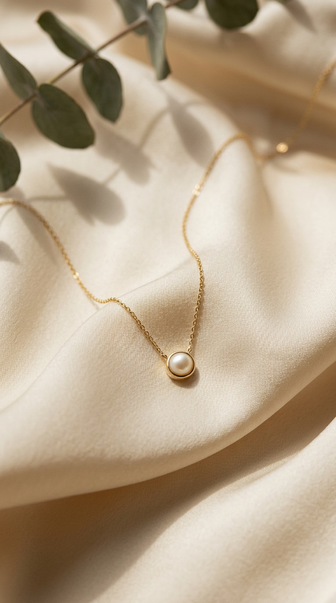
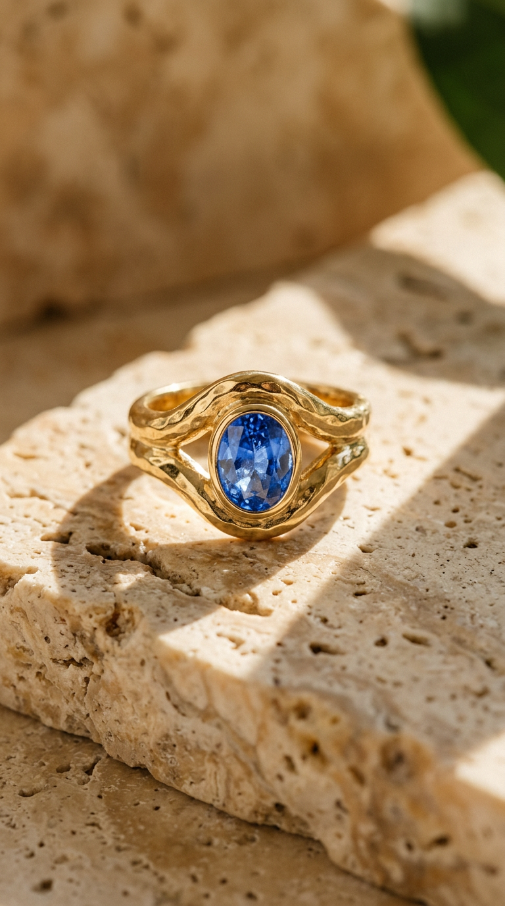
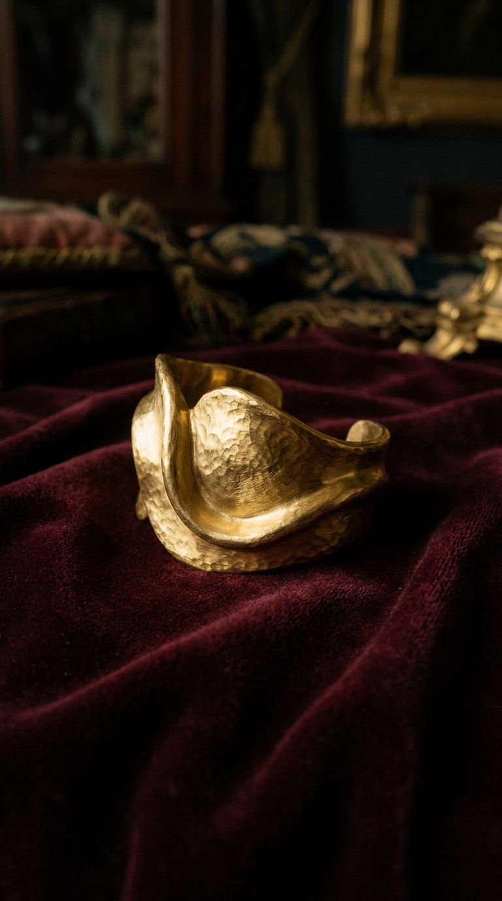

01A slower kind of luxury
Beauty is not
in a hurry.
We believe the most meaningful pieces are the ones you forget you are wearing — until someone asks.
02 / 10Fine objects for everyday ritual — 01/10
Jewellery with a point of view. Quietly distinctive, made in small runs to become part of your story.
Explore the collection ↗
The No. 07 ring
18k gold · lab sapphire
A slower kind of luxury
We believe the most meaningful pieces are the ones you forget you are wearing — until someone asks.
02 / 10The edit / 2026

01
02The atelier
Behind an unmarked door in Lisbon, a bench, a loupe and the morning light. Every Rêver piece passes through the same small atelier — where sketches become wax, wax becomes gold, and gold gets worn.
We keep the studio deliberately slow. Fewer pieces, more attention, and the kind of finishing you can only see from a few centimetres away.
Follow the making ↓Craftsmanship
Every design starts as a pencil study and a reason for existing. If a piece can't be worn every day, it doesn't survive the first page.
Wax models are carved by hand, then cast in recycled 18k gold. Small batches mean the furnace runs rarely, carefully.
Stones are selected one at a time for character — not perfection. Lab-grown sapphires and natural diamonds, always disclosed.
File, polish, check in the loupe. Pieces leave the bench with a satin softness machines can't quite imitate, and a pouch made for them.
The Rêver standard
Every piece begins with recycled 18k gold and a clear chain of custody.
Made by hands, not factories. We release fewer pieces and keep them longer.
Polishing, resizing and repairs — we are here for the whole life of your piece.
Lab-grown sapphires and natural diamonds, chosen for character and always disclosed on the tag.
Five microns of gold over sterling silver — the everyday version of the same shapes.
Each piece ships in a waxed cotton pouch and enters the Rêver archive — where it can always come back to us.
Worn well
“The Aurelia pendant is the first piece I've owned in years that people actually ask about. It feels personal — like it was made for a life I recognise.”
“I bought the No. 07 ring for a wedding. A year later it's the only piece I've stopped taking off. The sapphire glows in exactly the way I hoped.”
“Resizing my Forma cuff took a week, no drama, no charge. You can tell they mean it when they say they're here for the whole life of the piece.”
Things worth knowing
Each piece is designed in our Lisbon studio and finished by a small network of specialist makers in Portugal and Italy.
Keep your jewellery away from perfume, water and hard surfaces. Store it in its pouch when not being worn, and we'll polish it for free whenever you like.
Of course. We offer complimentary returns within 30 days. Just write to our studio and we will guide you through it.
Yes — tracked, insured shipping worldwide, usually within two working days from Lisbon. Duties are handled on arrival depending on your country.
Gold pieces are 18k with no nickel. Vermeil pieces are sterling silver under five microns of gold — fine for most, but write to us first if you have sensitive skin.
Occasionally, for engagements and anniversaries. The atelier takes a few commissions each season — write to hello@rever.studio with your idea.
From the journal
Come a little closer — 10/10
Occasional notes from our studio, never too often.